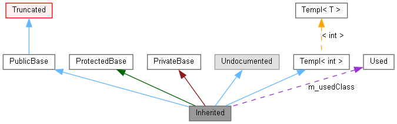

Ez az oldal elmagyarázza hogyan kell értelmezni a doxygen által készített ábrákat.
Vegyük a következő példát:
class Invisible { };
class Truncated : public Invisible { };
class Undocumented { };
class PublicBase : public Truncated { };
template<class T> class Templ { };
class ProtectedBase { };
class PrivateBase { };
class Used { };
class Inherited : public PublicBase,
protected ProtectedBase,
private PrivateBase,
public Undocumented,
public Templ<int>
{
private:
Used *m_usedClass;
};
Az eredmény a következő ábra lesz:
A fenti ábrán levő dobozok jelentése a következő:
-
Kitöltött fekete doboz jelzi azt az osztályt vagy struktúrát,amelyről az ábra szól.
-
Fekete keret jelzi a dokumentált osztályokat és struktúrákat.
-
Szürke keret jelzi a nem dokumentált osztályokat és struktúrákat.
-
Piros keret jelzi azokat az osztályokat és struktúrákat, amelyeknél vágás miatt nem látható az összes leszármaztatási kapcsolat. Egy ábra vágásra kerül, ha nem fér bele a megadott tartományba.
A nyilak jelentése a következő:
-
Sötétkék nyíl jelzi a publikus származtatás kapcsolatát két osztály között.
-
Sötétzöld nyíl jelzi a védett származtatást.
-
Sötétvörös nyíl jelzi a privát származtatást.
-
Lila szaggatott nyíl jelzi, ha az osztály egy másikat használ vagy tartalmaz. A nyíl felirata jelzi a változó(k) nevét, amelyeken keresztül a másik osztály kapcsolódik.
-
Sárga szaggatott nyíl jelzi a kapcsolatot a sablonpéldány és a példányosított osztálysablon között. A nyíl felirata jelzi a pélány sablonparamétereit.
 1.9.6
1.9.6